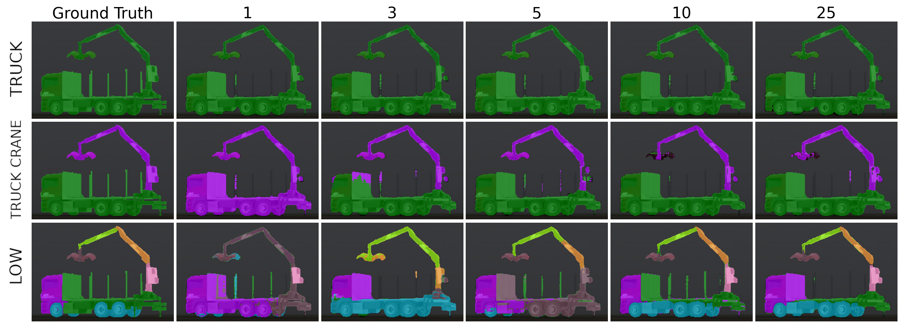
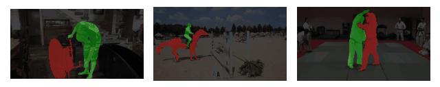
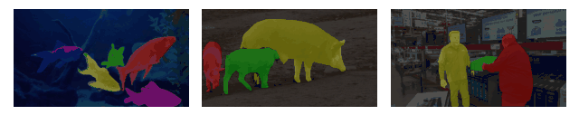

Understanding HOPOMOP
HOPOMOP is an AI-powered system that segments machinery parts using few-shot learning. It combines foundation models and graph neural networks to accurately analyze complex mechanical structures even with limited training data.
Welcome to HOPOMOP 🎯
HOPOMOP is an advanced approach for understanding and segmenting machinery parts from images using cutting-edge AI. Whether you're working with industrial machines, robotics, or just interested in computer vision, our approach makes it easier to analyze complex mechanical structures—even with very little training data!
🚀 Why HOPOMOP?
- Works with just a few training examples 🏗️
- Uses powerful AI models for precise segmentation 🤖
- Bridges the gap between synthetic and real-world images 🌍
How It Works 🔍
HOPOMOP combines different AI models to identify and segment parts of machines:
- SuperPoint: Detects key features in images 🏷️
- CLIPSeg: Understands objects based on text prompts 🔍
- Segment Anything: Quickly outlines objects with precision ✂️
- Graph Neural Networks: Connects important features for smarter predictions 🔗

What We Used 🏗️
🔄 Domain Randomization
To make the model smarter, we trained it with AI-generated images that change backgrounds, lighting, and angles—just like in video games! 🎮


Real-World Performance 🌍
Few-Shot Segmentation
Even with a handful of training images, HOPOMOP can accurately detect and label machine parts:
From Simulation to Reality
Trained on only 10 synthetic images, HOPOMOP successfully identifies parts on real machines:

Tracking Objects Over Time
HOPOMOP can follow moving objects in videos, making it useful for industrial inspections and automation:
| Segmentation Type | Example |
|---|---|
| One Class |  |
| Two Classes |  |
| Multi Classes |  |
Who We Are 👩‍🔬
HOPOMOP is developed at the AIT Austrian Institute of Technology 🇦🇹, specializing in vision, automation, and control research.
Want the Full Dataset? 📦
We provide a small sample to get you started. If you're interested in using the complete dataset for research, feel free to reach out!
Cite HOPOMOP 📚
If you use our work, please cite us:
@InProceedings{Schwingshackl_2025_WACV,
author = {Schwingshackl, Michael and Oberweger, Fabio F. and Murschitz, Markus},
title = {Few-Shot Structure-Informed Machinery Part Segmentation with Foundation Models and Graph Neural Networks},
booktitle = {Proceedings of the Winter Conference on Applications of Computer Vision (WACV)},
month = {February},
year = {2025},
pages = {1989-1998}
}